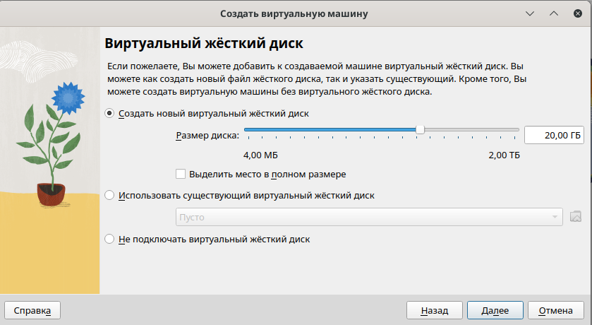

Установка и конфигурация операционной системы на виртуальную машину
Настроить рабочее пространство для индивидуального проекта, приобрести практические навыки установки операционной системы на виртуальную машину и настройки минимально необходимых для дальнейшей работы сервисов.
Oracle VM VirtualBox — это мощная и бесплатная виртуализационная платформа, разработанная корпорацией Oracle, которая позволяет пользователям создавать и управлять виртуальными машинами на своих компьютерах. [1]
Kali Linux (ранее известный как BackTrack Linux) - это дистрибутив Linux на базе Debian с открытым исходным кодом, который позволяет пользователям проводить расширенное тестирование на проникновение и аудит безопасности. Он работает на нескольких платформах и находится в свободном доступе как для профессионалов в области информационной безопасности, так и для любителей.
Этот дистрибутив содержит несколько сотен инструментов, конфигураций и сценариев с отраслевыми модификациями, которые позволяют пользователям сосредоточиться на таких задачах, как компьютерная экспертиза, реверс-инжиниринг и обнаружение уязвимостей, вместо того чтобы заниматься несвязанными действиями.
Этот дистрибутив специально разработан с учетом потребностей опытных тестировщиков на проникновение, поэтому вся документация на этом сайте предполагает предварительное знание операционной системы Linux в целом. [2]
{ #fig:0043width=70% height=70% }

Были настроено рабочее пространство для индивидуального проекта, приобретены практические навыки установки операционной системы на виртуальную машину и настройки минимально необходимых для дальнейшей работы сервисов.
[1] Документация по Virtual Box: https://www.virtualbox.org/wiki/Documentation
[2] Документация по Kali Linux: https://www.kali.org/docs/